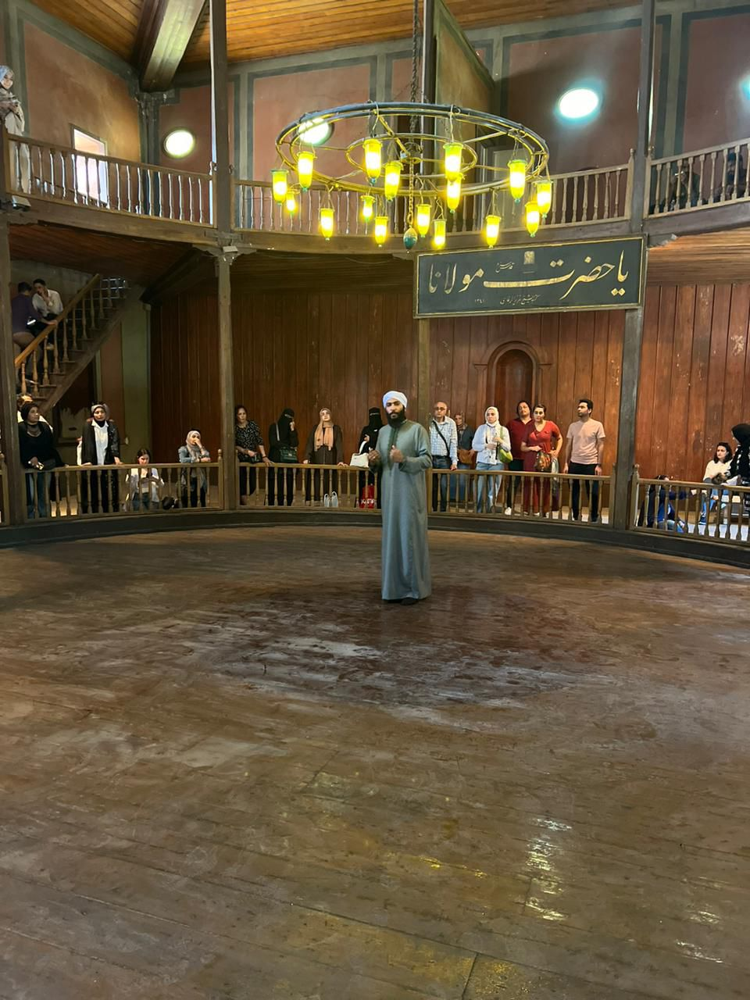
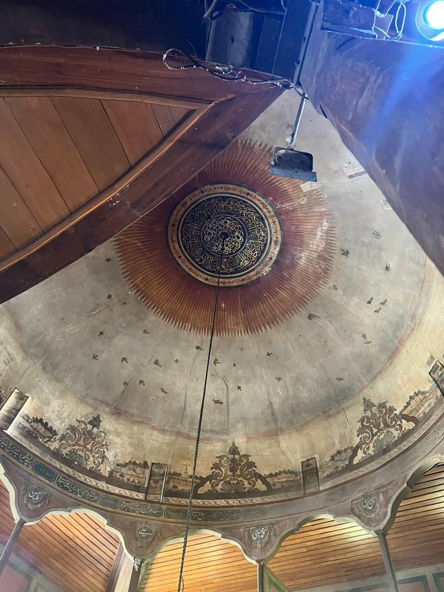
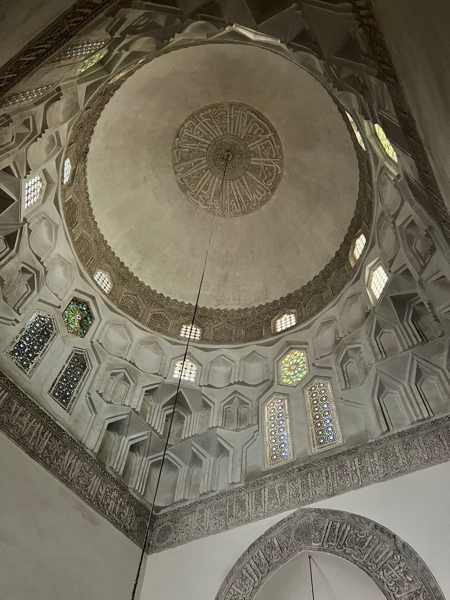
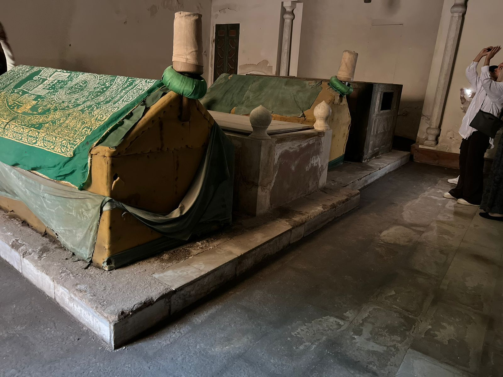

- احتفالية تشهدها مدينة قونيا التركية كل عام، يقوم بأدائها عشرات الدراويش الي جانب العديد من الموسيقيين ولا يقتصر فيها الحضور على السكان المحليين فقط، بل يحضرها عدد كبير من السياح لإحياء ذكري وفاة واحد من اهم المتصوفين في التاريخ الإسلامي إنه جلال الدين الرومي الذي أنشأ المولوية فألهم الموسيقيين، وكتب الشعر فأسر قلوب المتذوقين، وحكى عن العشق فذابت افئدة العاشقين.
- كل حياتي كانت عبارة عن ثلاثة أقوال: كنت فجًّا، نضجت، فاحترقت. بهذه الكلمات لخص جلال الدين محمد البلخي الملقب بمولانا جلال الدين الرومي رحلة حياته الذي بدأت في سبتمبر عام ١٢٠٧م في مدينة" بلخ" الواقعة اليوم في افغانستان وانتهت في ٧ ديسمبر عام ١٢٧٣م بمدينة "قونيا "التركية قضاها متنقل بين العديد من الدول طالبا للعلم حتى بات يُعرف "بسلطان العارفين" فقد أخذ العلم عن والده" محمد بهاء الدين ولد "الذي كان واعظاً يفتي في شؤون الدين وظل ملازماً لمرشده" برهان الدين محقق الترمذي" حتى جمع بين علوم التفسير والحديث والفقه الحنفي.
- استقر في قونيا واشتغل في الفتوى والتدريس والإرشاد وقد استمال الناس بزهده وخطبه وشعره فذاع صيته بينهم واقبل عليه التلاميذ ليغرفوا من علمه وقد استمرّ في ذلك حتى التقى" شمس الدين التبريزي" ليكون هذا اللقاء الذي أطلق عليه الباحثون اسم "مرج البحرين".
- "هو سماع النداء، ونسيان النفس والوصال إلي الله هو الغفلة عن الوجود، وتذوق البقاء في الفناء المطلق" هكذا وصف الرومي طقوس الطريقة المولوية التي انشأها لتصبح بعد ذلك واحدة من أشهر الطرق الصوفية وقد بدأت حكاية هذه الطريقة عندما كان الرومي يمشي في سوق قونيا و الحزن يغلف قلبه علي رحيل مرشده التبريزي الذي اعتزل الناس و التدريس منذ التقي به حتي ازدادت شكوي تلاميذه و كثر اللوم عليه فعندما غادر التبريزي قونيا ذات ليلة دون ان يخبر احداً حزن الرومي حزناً شديداً علي فراق مرشده و بينما هو يمر في السوق مطأطئ الرأس حزين سمع صوت الطرق علي صحائف الذهب فتحول حزنه الي شوقٍ و رغبة فتوقف عن المشي مستمعاً للأصوات ثم رفع يده اليمنى و عيناه مغمضتان و رأسه ساقط علي كتفه الأيمن يشرع بعدها في الدوران و هذه اول قاعده طبقها من ما تعلمه من معلمه التبريزي و قال عنها في قواعد العشق الأربعون "أنا الجسم الذي يدور حول نفسه و تدور حوله الكواكب “والذي بات يعرف بعدها "بالسماح" و يعد من طقوس الطريقة المولوية التي يتم إقامتها علي وقع الذكر و الأناشيد الدينية و عزف الآلات الموسيقية و هما: الناي و القانون في حالة تعبر عن عشق الإله و سماع ندائه. وبحديثنا عن المولوية قال الدرويش "حسين سليمان"، ان كل ما يقال عن الصوفية هي عبارة اكاذيب وشارك هذه الأكاذيب هم من يأخذون الطريقة المولوية عباره عن مهنه لكسب المال وما نراه اليوم من افعال لهم وهم لا يعرفون او يمثلون المولوية بشيء وان المولوية الحقيقية هي رحلة تجلي مع الله، وذلك ما دفعه هو شخصيا إلى الظهور وتصحيح هذه الصورة المشوهة، وبدأ في شرح التكية المولوية في القاهرة وهي الثانية بعد التكية الموجودة في مدينه قونيا التركية ولا يوجد إلا هاذين الاثنين في العالم وهما موقع تراث عالمي. كانت التكية في الأصل مدرسه بناها الأمير المملوكي "شمس الدين سنقر السعدي" سنه ٧٢١ هجريا وفي العصر العثماني استخدمت لتكون تكيه للطريقة المولوية و تتكون التكيه من قاعة "السمع خانه" المخصصة لأذكار الدراويش اما الدور الثاني فهو مخصص للجمهور و يحيط القاعة الدائرية ١٢ عمود كل عمود يحمل اسم و يبدأ باسم" سيدنا الحُسين" و سقف التكيه عباره عن قبه ملخص فيها شكل السماء و طيور الجنة و أبواب الجنة و تحت السمع خانه يوجد ٢٠ غرفه كانت تستخدم ملجأ لمن ليس له مأوى ثم بعد ذلك أصبحت خلوه للمتصوفين للتجلي والعبادة ويوجد ايضاً "قبه الضريح" المدفون تحتها عدد من كبار المتصوفة الذين عاشوا في مصر قبل حوالي ٤ قرون و من اشهرهم مولانا" محمد در"، ويطلق عليه "طباخ المولوية" نسبة لتعمقه و درايته الكاملة عن الطريقة و له غرفه خاصه و يوجد بالغرفة ايضاً كتاب" المثنوي " وهو اعظم كتاب شعر في التاريخ و العالم و فيه ٤٣ الف بيت شعر باللغة الفارسية.
- اما عن ثوب المولوية فهو عباءه بيضاء تمثل ثوب الجنة وفوقها عباءه سوداء تمثل ثوب الدنيا والطربوش هو شاهد القبر، ونري الدرويش عند دخوله القاعة يخلع العباءة السوداء وكأنه يتخلى عن زنوبة في الدنيا، ويبقي بثوب الجنة الأبيض الطاهر.
- قيل عن الصوفية في تعريفها الصحيح كثير من الأقاويل تنفي وتصحح الأكاذيب فقال" ابو علي الروذباري ٣٢٢ هجريا" : الصوفي من لبس الصوف علي الصفا وكانت الدنيا منه على القفا وسلك مناهج المصطفي.
- وقال "الجنيد" عن التصوف الذي توفي سنه ٢٩٧هجريا ان: التصوف ذكر مع اجتماع ووجد مع سماع وعمل مع اتباع. فدعونا نفرق بين التصوف وافعال المتصوفين ونفرق بين الإسلام وأفعال المسلمين ونصحح ونقول التصوف هو اجتهاد في عبادة الله.